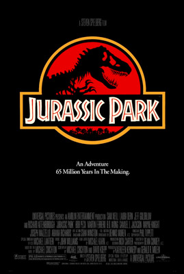
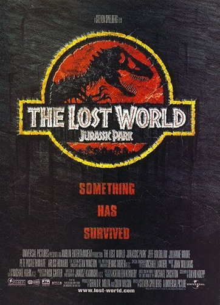
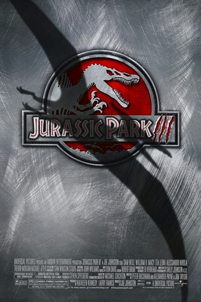

Sobre a Trilogia
A trilogia original de Jurassic Park (1993–2001) revolucionou a história do cinema ao combinar ficção científica, suspense e efeitos visuais.
Baseada na obra de Michael Crichton, a história acompanha as consequências da criação de dinossauros através da engenharia genética.

Jurassic Park - O Parque dos Dinossauros
1993
Sinopse
O bilionário John Hammond consegue clonar dinossauros a partir de DNA fóssil e constrói um parque temático secreto na Isla Nublar.
Antes da abertura oficial, ele convida cientistas e seus netos para conhecer o local. Porém, uma sabotagem desliga o sistema de segurança e permite que os dinossauros escapem.
Trailer

Jurassic Park II - O Mundo Perdido
1997
Sinopse
Quatro anos após os acontecimentos do primeiro filme, Ian Malcolm descobre a existência da Isla Sorna, conhecida como Sítio B.
Enquanto uma equipe tenta estudar os animais, outro grupo pretende capturar os dinossauros e levá-los para o continente.
Trailer

Jurassic Park III
2001
Sinopse
O paleontólogo Alan Grant aceita participar de um sobrevoo pela Isla Sorna em troca de financiamento para suas pesquisas.
Porém, ele descobre que o verdadeiro objetivo da viagem é encontrar uma criança desaparecida na ilha.
O grupo precisa sobreviver aos dinossauros, incluindo o perigoso Espinossauro.
Trailer
Em tributo a Sam Neill (1947 - 2026)
Sam Neill ficou conhecido pelos fãs da franquia por interpretar o paleontólogo Dr. Alan Grant.
O personagem apareceu em Jurassic Park (1993), Jurassic Park III (2001) e retornou anos depois em Jurassic World: Domínio (2022).
Sua interpretação ajudou a transformar Alan Grant em um dos personagens mais conhecidos da franquia Jurassic Park.